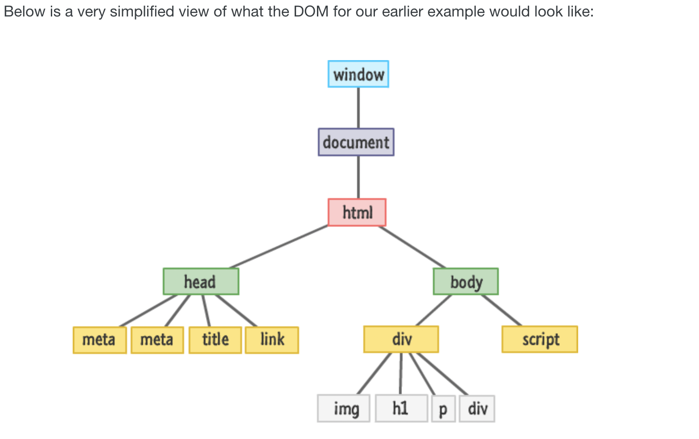
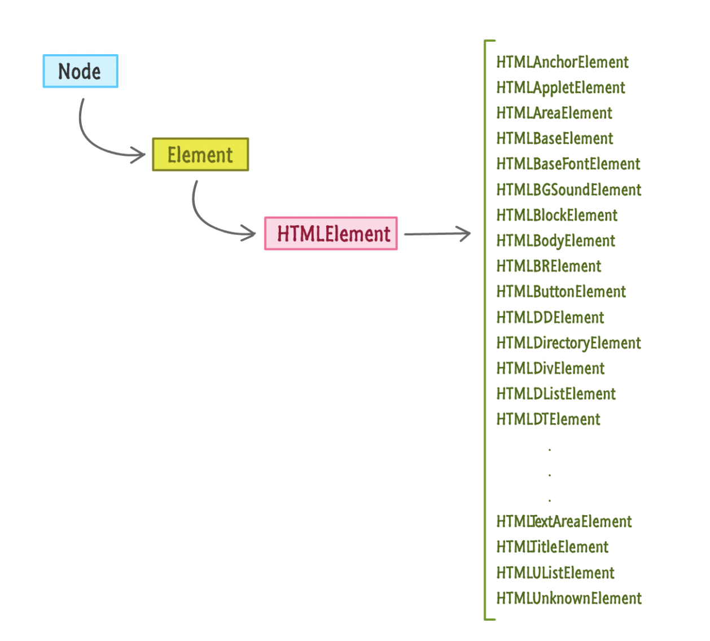
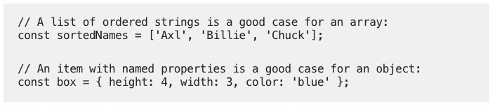

Introduction
The Document Object Model, usually referred to as the DOM, is an essential part of making websites interactive. It’s an interface that allows a programming language to manipulate the content, structure and style of a website. JavaScript is the client-side scripting language that connects to the DOM in an internet browser.
In order to effectively understand the DOM and how it relates to working with the web, it is necessary to have an existing knowledge of HTML and CSS. It is also beneficial to have familiarity with fundamental JavaScript syntax and code structure.
The aim of this post is not to overwhelm you with technical jargon, but to try to explain web development language in rather a more non-technical manner.
First I will use an analogy to explain the differences between HTML and CSS
Think of a beautiful warm Summer's day at the beach. Now, imagine yourself heading to the Movinpick shop for an icecream. You are in the icecream shop and at the first counter, called the HTML icecream counter, you see in the cabinet they are only selling vanilla icecream. You think to yourself, darn I really wanted gummies, sprinkles and a wafer with chocolate ice cream. Luckily, in the next cabinet, called the CSS cabinet, are all the yummy gummies, sprinkles and wafers to add to your icecream and make it yummier and more aesthetically pleasing. And in a second CSS cabinet there are loads of different flavours and colours of icecream. So you are now able to choose the chocolate flavour to add to your visual and taste sensation. You now have a kaleidoscope of excitement in your icecream.
HTML by itself is 'boring'. Vanilla. It can be transformed using CSS. CSS is the number one styling language that allows you to give your HTML some aesthetic and layout appeal. Both HTML and CSS however, are limited on the amount of interactivity they provide.
People wanted more;
They wanted their document to help them play with media, remember where they left off; do things with their mouse clicks, keyboard taps and finger presses; use fancy navigation menus; see awesome programmatic animations; interract with their web cams/microphones and a whole lot more. JavaScript is now a perfectly capable language that allows you to add the sorts of interactive things that people are looking for.
All these capabilities are accessed by the real star of this show, the DOM.
The DOM is a collision of HTML, CSS and JavaScript working together to create what gets shown. There is a heirarchical structure that your browser uses to make sense of everything going on. The diagram is a simplified structure of the DOM.
The DOM is the single most important piece of functionality you have for working with your HTML docs. It provides the missing link that ties your HTML, CSS and JavaScript.
Everything that makes up the DOM is more generically known as nodes. Every HTML element you want to access has a particular type associated with it and all these types extend from the node base that makes up all nodes.
Control Flow and Loops
The control flow is the order in which the computer executes statements in a script. Code is run in order from the first line to the last line, unless the computer runs across the structures that change the control flow, such as loops. The loops cause instructions to repeat until a certain condition is met.
I'll try to briefly explain these processes using an everyday life example. Each day I get up and have a cup of coffee to get going, after I have my coffee I normally switch on the computer, have a look at the days work and then go and have a shower. The control flow is always in that order and each day is a continual loop of similar tasks.
The difference between accessing data from arrays and objects
An array is a collection of values organised under a single name. Each individual value is associated with a number, known as an index, that distinguishes it from other values in the array. Array values are referenced using the expression array[i] Where array is the name if the array and i is the index of a specific value in the array.
Objects, on the other hand represent a special data type that is mutable and can be used to store a collection of data. That is, grouped properties of a single entity are better suited for objects.
What are Functions? And why are they useful?
Functions are really useful when you want to reuse the same JavaScript commands throughout your webpage, you can store the commands in a function. A function is a collection of commands that performs an action or returns a value. Every function includes a function name that identifies it and a set of commands that are run when the function is called. Functions let you reuse the code and helps cut down the amount of time to rewrite that code each time. Some functions also require parameters, which are variables associated with the function. The general syntax of a JavaScript function is
function function_name(parameter) { commands }